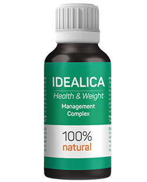

Motivul principal al obezității adesea este abordarea greșită a pierderii în greutate.
De regulă, pacienții mei sunt conștienți de importanța metabolismului rapid în pierderea în greutate. Cu toate acestea, accelerându-l printr-o nutriție adecvată și o cantitate mare de lichid, mulți se confruntă cu o astfel de problemă, precum creșterea apetitului necontrolat. Există o legătură directă între metabolismul accelerat și foamea necontrolată. Acum este posibil să rezolvați ambele probleme cu o singură acțiune folosind picăturile vegetale Idealica. Tratamentul obezității cu medicamente din generația trecută nu elimină cauza principală a problemei, ceea ce înseamnă că efectul unei astfel de pierderi în greutate va fi doar temporar.
IDEALICA este o abordare complexă pentru normalizarea proceselor metabolice până la nivelul unui echilibru sănătos al masei musculare și grăsimilor corporale prin stabilizarea funcționării sistemelor hormonale, nervoase și imune. IDEALICA, spre deosebire de alte medicamente, nu numai că activează arderea grăsimilor, dar transformă și rezervele de grăsimi în energie, ceea ce îmbunătățește starea sănătăţii, revigorează și creşte buna dispoziție.

Picăturile vegetale IDEALICA au un efect calmant, normalizează apetitul, reglează perturbările hormonale și accelerează metabolismul. Acest lucru înseamnă că veți pierde în greutate rapid, eficient și fără riscul de a câștiga din nou excesul de greutate. Medicamentul a trecut cu succes multe experimente clinice, studii de laborator și a reușit deja să câștige încrederea nutriționiștilor de top și a pacienților mei.
Simona Maiorescu doctor habilitat în ştiinţe medicale
profesor, nutriţionist
 Sarcină, naștere, alăptare
Sarcină, naștere, alăptare  Situații stresante și tensiune nervoasă
Situații stresante și tensiune nervoasă  Lipsa cronică de somn
Lipsa cronică de somn  Activitate fizică, sport
Activitate fizică, sport